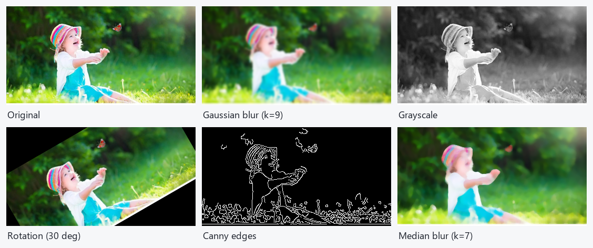

Python · TkinterOpenCV · NumPy · Pillow
Photo-Editax
- What it is
- A desktop image editor with 17 OpenCV operations in six menus: blur (average, Gaussian, median, bilateral, 2D convolution), colour-space conversion, geometric transforms, gradients, Canny edges and two-image blending. A spinbox sets the strength.
- Design
- The menu is generated from a config dictionary, and each item dispatches through one name-to-function map. Adding a filter means writing one function and adding one config entry, with no UI code.
- What I'd change next
- Keep an undo stack, track colour order explicitly (OpenCV uses BGR, Pillow uses RGB) and show errors inline instead of opening new windows.
Source on GitHub →
Real outputrendered by functions.py

Generated by running the repository's own filter functions on its sample image.